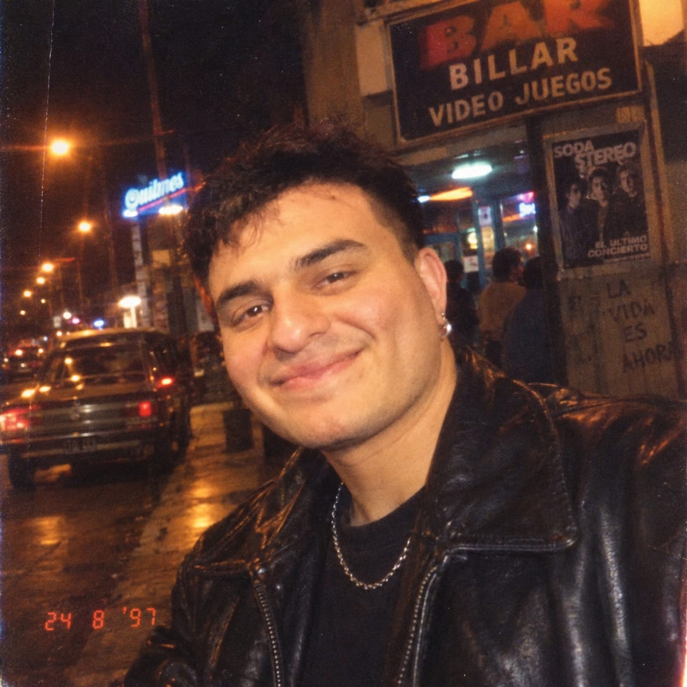

Mazo de Yugi
Tocá la carta para invocar un monstruo distinto.
Jonatan Emanuel Uribio
- Nombre Jonatan Emanuel Uribio
- Ciudad Yerba Buena, Tucumán
- Edad 29 años
Soy estudiante de la Tecnicatura en Programación y estoy construyendo mi camino profesional dentro del mundo de los sistemas. Me interesa combinar el diseño UX/UI con el desarrollo frontend para crear experiencias digitales claras, atractivas y fáciles de usar. También cuento con conocimientos de backend y bases de datos.
Mi objetivo es seguir formándome hasta desempeñarme como analista de sistemas. Considero esta tecnicatura una etapa fundamental de un proyecto personal que inicié con entusiasmo y que quiero continuar ampliando con nuevos conocimientos y experiencia.
Habilidades
- Diseño UX/UI
- JavaScript
- React
- Backend con MongoDB
Películas favoritas
- Trilogía de El caballero oscuro Christopher Nolan, 2005–2012
- The Avengers Joss Whedon, 2012
- Matrix Lana y Lilly Wachowski, 1999
Discos favoritos
- Sueño Stereo Soda Stereo, 1995
- Thriller Michael Jackson, 1982
- Interstellar: Original Motion Picture Soundtrack Hans Zimmer, 2014